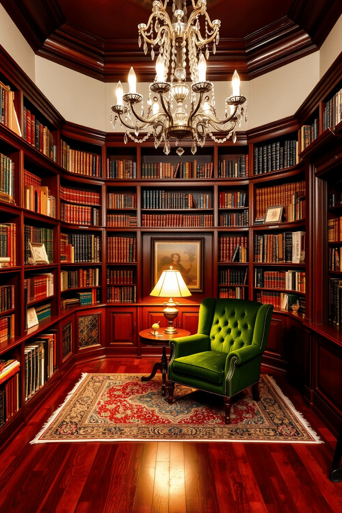
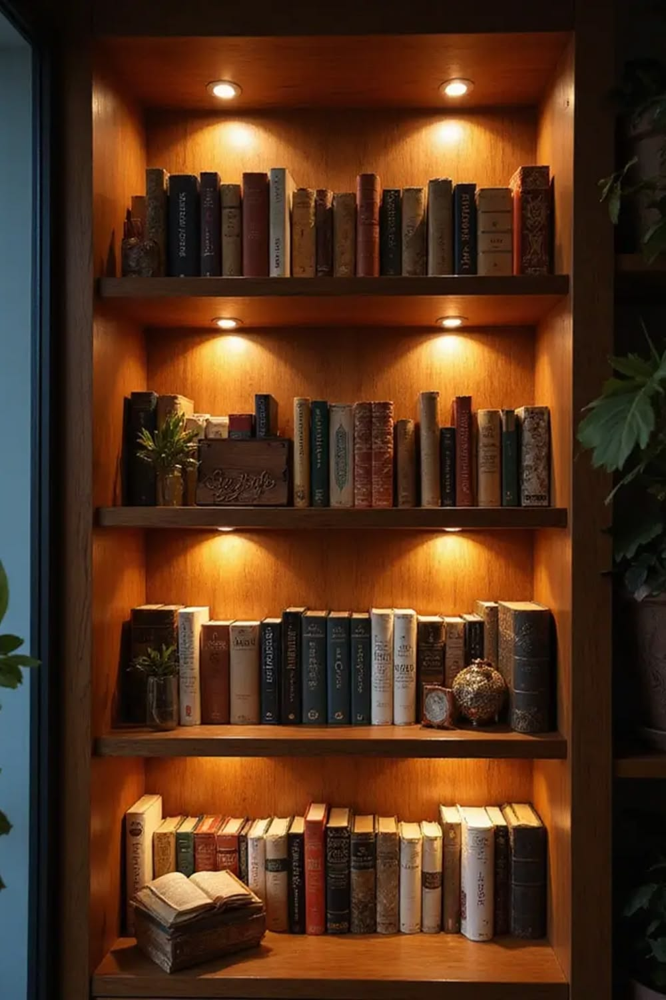

Natural Timber
Warm grain and subtle variation bring softness to the shelving.
InkDen materials are selected for touch, longevity, maintenance and how they sit beside books.

Materials are selected together rather than separately, allowing grain, colour, reflection and softness to create one connected visual language.

Warm grain and subtle variation bring architectural softness to the shelving.
Warm grain and subtle variation bring softness to the shelving.
Brass and dark metal introduce contrast through architectural details.
Fabrics and tactile surfaces bring comfort into the reading environment.
Layered light allows every finish to reveal its character naturally.
Hardware should feel discovered rather than announced. Every handle, pin and trim is chosen to support the larger material story.
Soft reflection and warm character for selected touch points.
Restrained contrast that gives modern shelving definition.
Shelf pins and the structural details remain visually quiet.


For chairs, cushions and acoustic softness.

Low-glare layers that make evening reading inviting.

Profiles and joins that make custom work feel refined.

Objects, plants and books balanced with restraint.
Lighting isn't simply added at the end. It is layered into the material palette so the library feels different in the morning, evening and quiet hours after dark.

Directed illumination keeps the page fine without creating glare.
Soft shelf illumination adds depth and reveals the collection.
Lower ambient light allows the room to settle into a atmosphere.
The final character comes from relationships: warm timber against refined metal, soft texture beside structured shelving, and light balancing darker tones.
 01
01
Soft textiles balance the stronger architectural presence of custom shelving.
 02
02
Timber grain and carefully resolved edges make the shelving feel crafted rather than assembled.
 03
03
Warm illumination allows books, objects and finishes to settle naturally into the room.
A few practical answers to help you compare material directions with confidence.
We choose the wood tone around the room, existing furniture, book collection and desired warmth rather than using one finish everywhere.
Yes. A restrained mix of timber, metal, fabric and paint can add depth while keeping the library visually calm.
We can recommend practical surfaces and detailing based on how frequently the room is used and how much display handling it receives.
Absolutely. Colour temperature, glare control and surface reflectance are considered together with the material palette.
Share your space and we will guide the material direction.